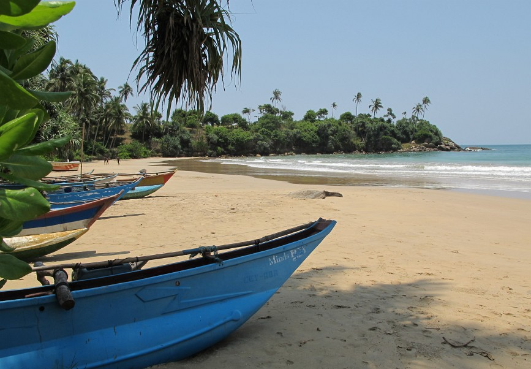

- Hjem
- Runreiser
- Reisemål
Top
India er kontrastenes land som byr på kultur, historie og natur “i bøtter og spann”. Landet er en salig blanding av eldgamle østlige tradisjoner, en miks av stive, britiske manérer samt fattigdom og moderne teknologi
India er kontrastenes land som byr på kultur, historie og natur “i bøtter og spann”. Landet er en salig blanding av eldgamle østlige tradisjoner, en miks av stive, britiske manérer samt fattigdom og moderne teknologi
India er kontrastenes land som byr på kultur, historie og natur “i bøtter og spann”. Landet er en salig blanding av eldgamle østlige tradisjoner, en miks av stive, britiske manérer samt fattigdom og moderne teknologi
India er kontrastenes land som byr på kultur, historie og natur “i bøtter og spann”. Landet er en salig blanding av eldgamle østlige tradisjoner, en miks av stive, britiske manérer samt fattigdom og moderne teknologi
India er kontrastenes land som byr på kultur, historie og natur “i bøtter og spann”. Landet er en salig blanding av eldgamle østlige tradisjoner, en miks av stive, britiske manérer samt fattigdom og moderne teknologi
India er kontrastenes land som byr på kultur, historie og natur “i bøtter og spann”. Landet er en salig blanding av eldgamle østlige tradisjoner, en miks av stive, britiske manérer samt fattigdom og moderne teknologi
India er kontrastenes land som byr på kultur, historie og natur “i bøtter og spann”. Landet er en salig blanding av eldgamle østlige tradisjoner, en miks av stive, britiske manérer samt fattigdom og moderne teknologi
India er kontrastenes land som byr på kultur, historie og natur “i bøtter og spann”. Landet er en salig blanding av eldgamle østlige tradisjoner, en miks av stive, britiske manérer samt fattigdom og moderne teknologi
India er kontrastenes land som byr på kultur, historie og natur “i bøtter og spann”. Landet er en salig blanding av eldgamle østlige tradisjoner, en miks av stive, britiske manérer samt fattigdom og moderne teknologi
India er kontrastenes land som byr på kultur, historie og natur “i bøtter og spann”. Landet er en salig blanding av eldgamle østlige tradisjoner, en miks av stive, britiske manérer samt fattigdom og moderne teknologi
Dag – 01 : Ankomst Delhi
Ankomst Delhi internasjonale flyplass. Her vil vår representant møte oss ved utgangen av terminalbygningen for transport til hotellet. Som Indias hovedstad og en viktig inngangsport til landet, er moderne Delhi en travel storby som kombinerer det gamle med det moderne. Delhi består egentlig av to byer, den gamle byen Delhi (Old Delhi) og New Delhi, som har vært hovedstad i India siden 1931. Midt blant skyskraperne står mange historiske monumenter, som tause påminnelser til regionens gamle arv.
Dag – 02 : Delhi
Etter frokost på hotellet følger en full dag med sightseeing i New Delhi og Old Delhi. Turen starter med et besøk til Old Delhi. Old Delhi er en Når du går gjennom de travle gatene i Old Delhi er det vanskelig å tenke seg helt tilbake til 1648, da keiser Shah Jahans datter Jahanara bygget opp området for å glede sin far. Her vil du få se Jama Masjid, bygd i 1650 og en av de største Moskeene i India. Kjør gjennom sagnomsuste Chandni Chowk, “Sølvgaten “, som en gang var det mest overdådige parfymemarkedet i India. Nå er det et yrende marked for å jakte ned gammelt og nytt sølv og gull fra gullsmeder med forfedre som tjente keiserne. Kjør forbi den røde festningen (stengt på mandager), bygget så langt tilbake som i 1639 av keiser Shah Jahan, som også bygde Taj Mahal. Besøk Raj Ghat, hvor Mahatma Gandhi ble kremert etter at han ble myrdet i 1948. Turen fortsetter til triumfbuen India Gate, et minnesmerke over alle soldatene fra India som omkom i første verdenskrig. Senere er det lunch på egenhånd. Etter Lunsj fortsetter omvisningen i New Delhi. New Delhi ble planlagt og bygd av britene på 1920-tallet, og er preget av Sir Edwin Lutyens storslåtte arkitektur. Vi besøker Humayun’s gravkammer, kalt forløperen til Taj Mahal på grunn av den ytre Mughalarkitekturen, senere perfeksjonert i Taj Mahal. Vi fortsetter til det 12. århundrets Qutab Minar, som er en av de mest perfekte tårnene i verden og måler 72 meter høyt. I nærheten står ruinene av Quwwat ul Islam moskeen, som er over 1500 år gammel og tilsynelatende immun mot rust. Kjør gjennom Rajpath hvor man ser regjeringens bygninger, presidentens hus, parlamentet og India Gate.
Dag – 03 : Delhi / Agra (Ved bil)
Etter frokost på hotellet kjører vi fra Delhi til Agra (204 km / 4 timer). Agra er i forhold til omgivelsene fortsatt forbundet med sin Mughalske periode. Mughalerne var forutenom store herskere også store byggherrer, og de vedlikeholdt sine beste arkitektoniske underverker for Agra. Byen har mange flotte monumenter og Taj Mahal, den største av dem alle, er et mesterverk av Mughalsk arkitektur. Agra Fort, Itimad-ud-Daulahs grav, det storslåtte Taj Mahal og Akbar’s øde hovedstad, Fatehpur Sikri, er hver og en unike og enestående. Ved ankomst sjekker vi inn på hotellet.
Dag – 04 : Agra
Etter frokost på hotellet, drar vi på rundtur i Agra. Først vil vi besøke Taj Mahal (stengt fredager). Det tok 22 år og 20.000 menn å bygge palasset. Den hvite marmoren ble brutt 200 mil unna, og ble transportert til området med en flåte på 1000 elefanter. Bygget av Mughalkeiseren Shah Jahan som et uttrykk for sin kjærlighet til sin kone Mumtaz Mahal i midten av det 17. århundre, er Taj Mahal virkelig et av underverkene i verden. Selv om palasset ser ut til å være utrolig perfekt fra nesten alle vinkler, er det nærbilder av arbeidet med marmoren som virkelig er forbløffende. Du vil få rikelig tid til å se og bli hypnotisert av dette enestående stykket arkitektur. Senere er det lunsj på en lokal restaurant. Vi fortsetter turen til Agra Fort (den røde festningen). Dette var sete for Mughalsk styre og administrasjon, og den nåværende strukturen skylder sin opprinnelse til keiseren Akbar som oppførte vegger og porter, og de første bygningene på den østlige bredden av Yamuna River. Shah Jehan la til de imponerende kvartalene og moskeen.
Dag – 05 : Agra / Fatehpur Sikri / Jaipur
Etter frokost på hotellet vil du bli kjørt fra Agra til Jaipur (250 km / 6 timer). Under reisen til Jaipur, vil vi besøke Fatehpur Sikri. Fatehpur Sikri – den øde byen i rød sandsten, bygget av den store Mughalkeiseren Akbar på slutten av 1600-tallet. Fatehpur Sikri (byen av seier) var hovedstad i det Mughalske riket i bare noen tiår. Den ble forlatt kort tid etter at den ble bygget, da de lokale brønnene gikk tørre. I dag står den fortsatt i samme tilstand som den var for over 300 år siden. Den er komplett med palasser og moskeer, og var en by større enn London da den opprinnelig ble konstruert. Senere på ettermiddagen vil vi ankomme Jaipur og sjekke inn på hotellet. Jaipur (den rosa byen) er hovedstaden og den største byen i den indiske staten Rajasthan. Denne fascinerende ørkenstaten og dens folk er omgitt av kuperte åser, hver kronet med fantastiske fort og vakre palasser, herskapshus og hager. Palassene og fortene, som for lenge siden var vitne til kongelige prosesjoner og prakt, er nå levende monumenter. Med sin historiske fortid, gjenopplives legender om det gamle folkeslaget Rajputs, og det er en opplevelse å vandre rundt i Jaipurs gamle basarer.
Dag – 06 : Jaipur
Etter frokost på hotellet, kjører vi rett utenfor Jaipur, til den gamle hovedstaden Amber. Her skal vi besøke det fantastiske Amber Fort. Maharaja Mansingh, Mughalkeiser Akbars mest suksessrike general, startet byggingen av Amber Fort i det 17. århundre. Du kan velge mellom å gå, kjøre jeep eller sitte på en elefantrygg opp til festningen. (elefantturer avhenger av tilgjengelighet). Når du er på toppen, spaserer du gjennom flere gårdsplasser og haller. Mange av rommene har nydelige veggmalerier, med edelsteiner og speil innfelt i veggene. Mest fascinerende er kanskje Sheesh Mahal (speilhallen), der et enkelt lampelys er reflektert i de mange speilene, og lyser opp rommet. Vi drar tilbake til hotellet etter utflukten. På ettermiddagen fortsetter vi med bytur i Jaipur. Blant høydepunktene å se i Jaipur er bypalasset. Et overveldende kompleks av utsøkte palasser, hager, gårdsplasser, kunsthåndverk og utskårne døråpninger. Palassmuseet består av samlinger av sjeldne manuskripter, våpenhus, kostymer, tepper og miniatyrmalerier. Spaser til Jantar Mantar det astronomiske observatoriet,som ble bygget i 1726 av Jai Singh ll. Det er en av fem slike astronomiske underverker i vest India, og utfører målinger selv den dag i dag. Vi vil stoppe ved “Vind palasset”, ellers kjent som Hawa Mahal. Med rosa utskjæringer i sand, og en virkelig forseggjort fasade med smårutete skjermer, slik at hoffdamene kunne se det daglige livet i gaten nedenfor. Du vil også få mulighet til å vandre i de lokale basarene.
Dag – 07 : Jaipur / Ranthambore
Etter frokost på hotellet vil dere bli kjørt fra Jaipur til Ranthambore (160 km/ 4 timer). Ranthambore nasjonalpark er en av de fineste tigerreservatene I India. Gamle forlatte festninger, innsjøer og fremfor alt de fantastiske tigrene har gjort det til en av de mest filmede dyrelivreservatene i verden. Ranthambore ble erklært en hellig dyrepark i 1955 og ble en del av prosjekt Tiger i 1973. Parken, som dekker et område på nesten 400 kvadratkilometer ligger mellom Aravali og Vindhya områdene. Løvskogen var tidligere en del av den praktfulle jungelen i det sentrale India. Nasjonalparken er hjemmet til dyr som sjakaler, manguster, dovendyr, leoparder, og selvfølgelig mange tigre. Ved ankomst er det lunch på hotellet. Senere på kvelden blir det bilsafari i nasjonal parken.
Dag – 08 : Ranthambore
Morgen og kveld blir det bilsafari i nasjonal parken. Frokost/ lunch/ middag på hotellet.
Dag – 09 : Ranthambore – Delhi – Departure
Om morgenen bilsafari i nasjonal parken. Om ettermiddagen tar du toget til Delhi. Avgang Sawai Madhopur : kl. 12.35 Ankomst Delhi : kl. 18.30 Ved ankomst drar du til flyplassen for din flyreise tilbake til Norge.